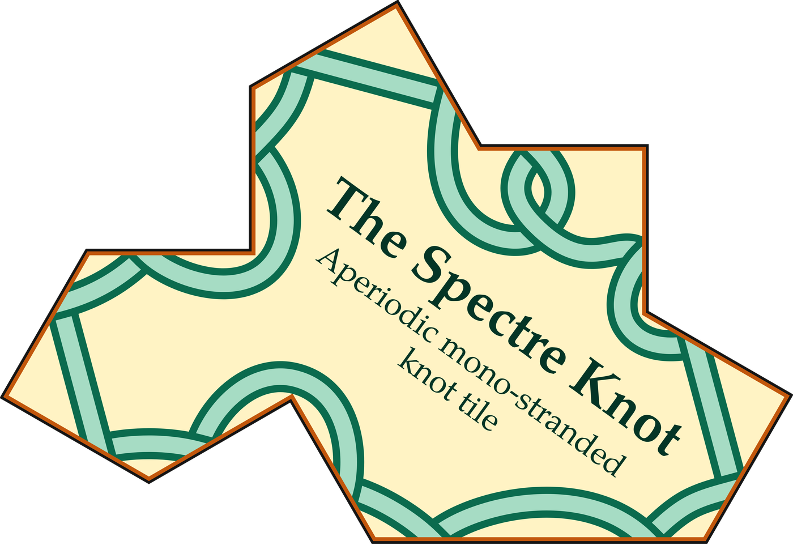

The Spectre Knot
Aperiodic mono‑stranded knot tile

The tile is the spectre, discovered in 2023 by David Smith, Joseph Samuel Myers, Craig S. Kaplan and Chaim Goodman‑Strauss: a single shape whose copies cover the whole plane, but only in patterns that never repeat.
The knot is the ribbon drawn on it, found by Justin Roughley in 2026. It is the same on every tile, yet across the infinite tiling its fourteen pieces join into one endless strand: a single Celtic knot through every tile, with no closed loops and no second strand, weaving over and under all the way.
Open
Also: the explainer as a PDF · the tile as an 8000 px PNG

The spectre
David Smith, Joseph Samuel Myers, Craig S. Kaplan and Chaim Goodman‑Strauss, A chiral aperiodic monotile, Combinatorial Theory 4(2) (2024).
The same authors, An aperiodic monotile, Combinatorial Theory 4(1) (2024), the “hat”.
Craig Kaplan’s page on the spectre: cs.uwaterloo.ca/~csk/spectre.